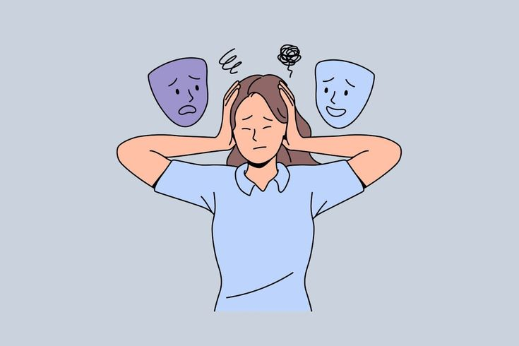

La sobreprotección por parte de los cuidadores primarios en la infancia hace que nos acostumbremos a tener todo lo que queremos y que, en la vida adulta,
vivamos frustrados. Así, para salir de este estado eterno de insatisfacción, buscamos una nueva figura protectora en vez de luchar por nuestra autonomía e
independencia. Es un tipo de comportamiento común de las personas que han sido acostumbradas a mostrarse
caprichosas y a exigir cosas de los demás.